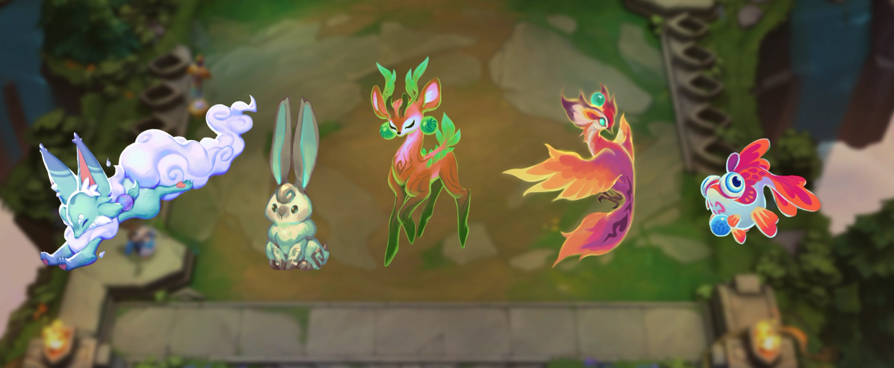

롤토체스 세트18 신비의숲 수호령 등장규칙 7가지 분류 정리
롤토체스, 그러니까 리그 오브 레전드의 오토배틀러 전략적 팀 전투가 처음이신 분들을 위해 짧게 설명드리면, 챔피언을 사서 보드에 배치해두면 알아서 전투가 붙는 방식으로 진행되는 게임인데요. 세트가 바뀔 때마다 챔피언 구성이랑 시스템이 통째로 갈아엎어지는데, 이번 세트18 '신비의 숲'에는 '수호령'이라는 신규 시스템이 새로 들어온다는데요. 아직 정식 출시 전이라 직접 플레이해본 건 아니고, 라이엇이 공개한 개요 페이지 내용을 바탕으로 등장 규칙이랑 7가지 분류를 정리해봤어요.

신비의 숲 세트18 공식 키비주얼이에요.
이미지 출처: 라이엇 공식 '신비의 숲 개요' 페이지 · 네이버 본문엔 받아서 재업로드 권장
수호령이 뭔가요? 세트12 주술이랑 뭐가 다른가요
수호령은 세트12 '마법 아수라장'에서 쓰였던 '주술' 체계를 업데이트한 신규 시스템인데요. 라이엇 측 안내로는 수호령이 상점에 등장하는데요, 전투에서 한 번만 쓸 수 있는 일시적인 위력을 주거나 경험치·골드 같은 자원을 챙겨주기도 하고, 심지어는 교활한 숲의 생명체와 위험한 거래를 할 수도 있는 존재예요. 이름도 생김새도 완전히 바뀌었지만 '상점에서 사는 일시적 효과'라는 뼈대는 주술 시절이랑 이어지는 셈이죠.

이번 세트에 나올 수호령 생물들의 컨셉아트예요. 생김새부터 벌써 제각각이죠.
이미지 출처: 라이엇 공식 '신비의 숲 개요' 페이지 · 네이버 본문엔 받아서 재업로드 권장
수호령, 언제 얼마나 나오나요
수호령은 매 라운드 하나씩 구매할 수 있고, 상점 새로고침 두 번마다 한 번씩 등장하는데요. 라이엇 개요 문서가 안내하는 등장 규칙을 정리하면 이래요.
- 매 라운드 수호령을 하나씩 구매할 수 있어요.
- 상점 새로고침을 두 번 할 때마다 한 번씩 등장해요.
- 수호령은 항상 상점의 가장 오른쪽 칸에 나타나요.
- 대부분 한 라운드 동안만 지속되고, 그 이후엔 사라져요.
- 게임이 진행될수록 위력이 커지고, 강력한 수호령일수록 단계도 더 높아져요.
아무 때나 살 수 있는 게 아니에요
수호령은 준비 단계에서만 살 수 있고, 전투가 시작되면 사라져요. 준비 단계가 끝나면 수호령이 사라지면서 원래 그 칸에 가려져 있던 유닛이 드러나는 방식인데요. 그래서 수호령을 안 사더라도 상점 그 칸에서 유닛을 하나 더 확인할 수 있다고 개요 문서는 안내하고 있어요. 표현을 그대로 빌리면 '어쩌면 7레벨에 정말 필요했던 5단계 유닛일 수도 있으니까요'라고 하네요. 수호령 구매 여부와 상관없이 유닛 확인은 가능하다는 점에서, 예전 주술보다 상점 칸을 덜 아깝게 쓸 수 있게 바뀐 것 같아요.
스테이지 5부터는 등장 방식이 달라져요
스테이지 5 이후부터는 전투 수호령과 다른 분류의 수호령이 번갈아 등장하는데요. 세트12에서는 게임 후반에 전투 관련 주술을 얻으려고 상점을 계속 새로고침해야 해서 운에 너무 좌우된다는 문제가 있었다고 개요 문서가 짚고 있어요. 이번엔 승기를 잡기 위한 수호령을 좀 더 수월하게 만날 수 있게 바뀌었지만, 그래도 게임 후반 골드 관리는 여전히 중요한 변수라고 하니 무턱대고 새로고침만 남발할 일은 아닌 것 같아요.
수호령 7가지 분류, 뭐가 있나요
라이엇이 공식적으로 밝힌 수호령 분류는 아래 표처럼 7가지인데요.
| 번호 | 분류 |
|---|---|
| 1 | 챔피언 |
| 2 | 전투 |
| 3 | 상점 |
| 4 | 골드 및 경험치 |
| 5 | 위험 |
| 6 | 아이템 |
| 7 | 기타 |
각 분류는 고유한 색상과 아이콘으로 구분되고, 수호령을 구매하면 그 아이콘이 내 전략가 체력 바 옆에 표시된대요. 그래서 상점을 새로고침하거나 다른 플레이어를 정찰할 때도 어떤 종류의 수호령인지 좀 더 빠르게 파악할 수 있다고 하네요. 다만 이 7가지는 어디까지나 '분류' 기준이에요. 분류마다 실제로 어떤 수호령이 몇 종류씩 들어있는지, 개별 수호령의 이름과 효과까지 이번 개요 문서가 전부 공개한 건 아니라서 그 부분은 아직 확인이 필요해요.
확정된 것 vs 아직 확인 안 된 것
출시일, 수호령의 정체, 등장 규칙, 7가지 분류는 라이엇이 확정해서 밝힌 내용인데요, 개별 수호령의 이름·효과·수치는 아직 확인되지 않았어요. 확정된 부분부터 정리하면, 세트18 '신비의 숲'은 2026년 8월 26일 18.1 패치로 출시되고, 수호령은 세트12 주술을 이어받은 시스템이며, 위에서 정리한 등장 규칙과 7가지 분류는 개요 문서에 그대로 적힌 내용이에요. 반대로 각 분류 안에 구체적으로 어떤 수호령이 있는지, 효과 수치는 어느 정도인지 같은 세부 내용은 이번 개요 문서엔 따로 담기지 않았어요. 출시 이후 실제로 플레이하면서 하나씩 채워가야 할 부분인 것 같아요.
개인적으로 드는 생각
개인적으로는 상점 칸 하나가 통으로 수호령한테 밀려서 나오던 예전 주술 방식보다, 준비 단계에만 반짝 등장하고 사라지면서 원래 유닛도 그대로 보여주는 이번 방식이 확실히 더 합리적이라는 생각이 들어요. 상점 리소스를 낭비한다는 느낌 없이 수호령을 고민할 수 있을 것 같거든요. 다만 7가지나 되는 분류로 늘어난 만큼 초반엔 뭐가 뭔지 구분하기 까다로울 수도 있겠다 싶어요. 색상·아이콘으로 구분해준다고는 하지만, 결국 익숙해지기 전까진 상점 새로고침할 때마다 헷갈릴 것 같긴 하네요.
자주 묻는 질문
Q. 수호령이랑 상점에 있는 일반 유닛은 뭐가 다른가요?
수호령은 챔피언이 아니라 일시적인 효과나 자원, 위험한 거래를 제공하는 별도의 존재예요. 상점 가장 오른쪽 칸에서만 나타나고 대부분 한 라운드만 지속되다 사라진다는 점에서, 계속 남아 있는 일반 유닛 구매랑은 완전히 다른 개념이에요.
Q. 수호령을 자주 만나려면 상점을 계속 새로고침해야 하나요?
공개된 내용에 따르면 매 라운드 하나씩 구매할 수 있고 상점 새로고침 두 번마다 한 번씩 등장한다고만 되어 있어요. 새로고침 횟수와 등장 확률이 정확히 어떤 공식으로 계산되는지 세부적인 부분까지는 공개되지 않았어요.
수호령 정리
정리하자면 신비의 숲 수호령은 세트12 주술을 계승한 시스템으로, 준비 단계에만 상점 가장 오른쪽 칸에 등장하고, 상점 새로고침 두 번마다 한 번씩 나타나며, 스테이지 5부터는 전투 수호령과 다른 분류가 번갈아 등장한다는 게 핵심이에요. 공식이 밝힌 분류는 위 표에 정리한 7가지고요. 개별 수호령의 정체나 효과 수치까지는 아직 베일에 싸여 있으니, 여러분도 8월 26일 18.1 패치로 실제 만나보면서 하나씩 확인해봐야 한답니다.